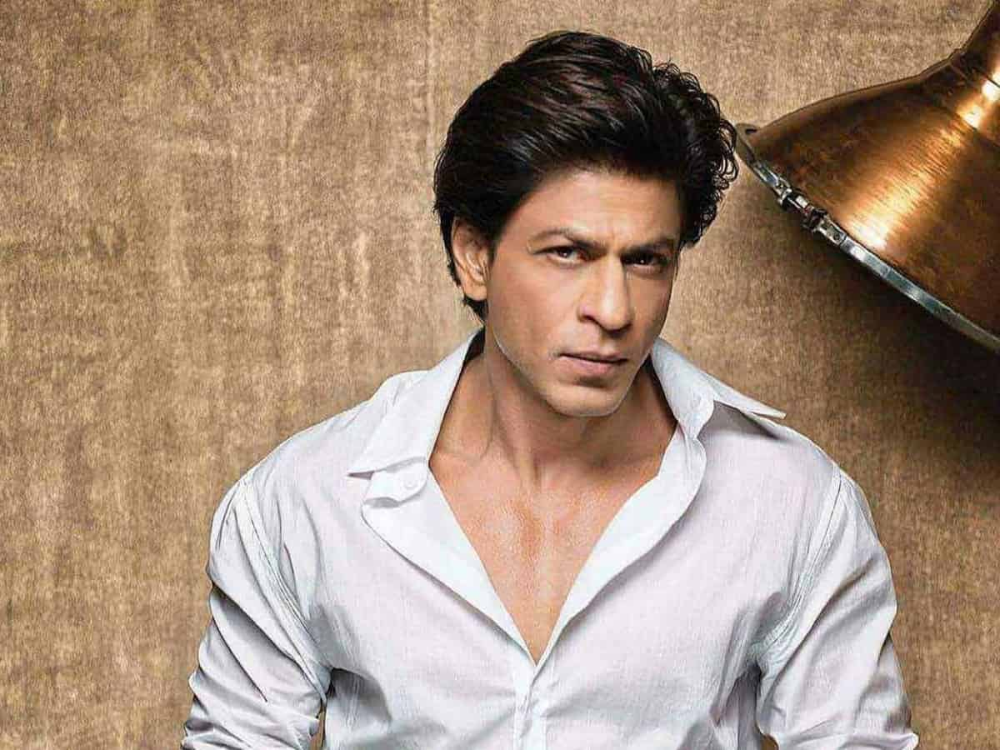
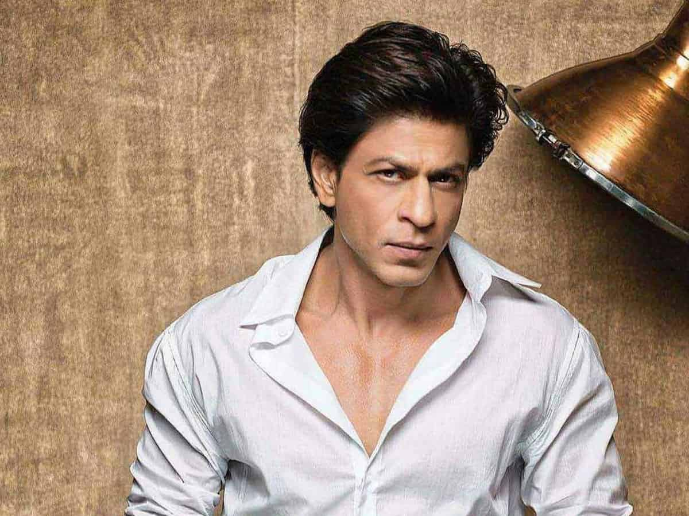

Born: 2 November 1965(age 57)
Occupation: Actor, Producer, Businessman
Country: India
Years Active: 1988 - Present
Spouse: Gauri Khan (m. 1991)
Children: 3
Honours: Padma Shri(2005), Ordre des Arts et des Lettres (2007), Légion d'honneur (2014)
Biography: Shah Rukh Khan, also known by the
initialism SRK, is an Indian actor and film producer who works in
Hindi films. Referred to in the media as the "Baadshah of Bollywood"
and "King Khan", he has appeared in more than 90 films, and earned
numerous accolades, including 14 Filmfare Awards. He has been awarded
the Padma Shri by the Government of India, as well as the Ordre des
Arts et des Lettres and Legion of Honour by the Government of France.
Khan has a significant following in Asia and the Indian diaspora
worldwide. In terms of audience size and income, he has been described
as one of the most successful film stars in the world. Many of his
films thematise Indian national identity and connections with diaspora
communities, or gender, racial, social and religious differences and
grievances.
Khan began his career with appearances in several
television series in the late 1980s, and had his Bollywood debut in
1992 with Deewana. He was initially recognised for playing villainous
roles in the films Baazigar (1993) and Darr (1993). Khan established
himself by starring in a series of top-grossing romantic films,
including Dilwale Dulhania Le Jayenge (1995), Dil To Pagal Hai (1997),
Kuch Kuch Hota Hai (1998), Mohabbatein (2000), Kabhi Khushi Kabhie
Gham... (2001), Kal Ho Naa Ho (2003), Veer-Zaara (2004) and Kabhi
Alvida Naa Kehna (2006). He earned critical acclaim for his portrayal
of an alcoholic in Devdas (2002), a NASA scientist in Swades (2004), a
hockey coach in Chak De! India (2007) and a man with Asperger syndrome
in My Name Is Khan (2010). Further commercial successes came with the
romantic dramas Om Shanti Om (2007) and Rab Ne Bana Di Jodi (2008),
and with his expansion to comedies in Chennai Express (2013) and Happy
New Year (2014). Following a brief setback and hiatus, Khan made a
career comeback with the action film Pathaan (2023), which became the
second-highest-grossing Hindi release.
As of 2015, Khan is co-chairman of the motion picture production
company Red Chillies Entertainment and its subsidiaries, and is the
co-owner of the Indian Premier League cricket team Kolkata Knight
Riders and the Caribbean Premier League team Trinbago Knight Riders.
The media often label him as "Brand SRK" because of his many
endorsement and entrepreneurship ventures. Khan's philanthropic
endeavours have provided health care and disaster relief, and he was
honoured with UNESCO's Pyramide con Marni award in 2011 for his
support of children's education and the World Economic Forum's Crystal
Award in 2018 for advocating for women's and children's rights in
India. He regularly features in listings of the most influential
people in Indian culture, and in 2008, Newsweek named him one of their
fifty most powerful people in the world. In 2022, Khan was voted one
of the 50 greatest actors of all time in a readers' poll by Empire,
and in 2023, Time magazine named him one of the 100 most influential
people in the world.
Early life:Khan was
born on 2 November 1965 into a Muslim family in New Delhi. He spent
the first five years of his life in Mangalore, where his maternal
grandfather, Iftikhar Ahmed, served as the chief engineer of the port
in the 1960s.Khan has described himself on Twitter as "half Hyderabadi
(mother), half Pathan (father), and some Kashmiri (grandmother)".
Khan
grew up in the Rajendra Nagar neighbourhood of New Delhi. His father
had several business ventures including a restaurant, and the family
lived a middle-class life in rented apartments. Khan attended St.
Columba's School in central Delhi where he excelled in his studies and
in sports such as hockey and football,and received the school's
highest award, the Sword of Honour.Initially Khan aspired to pursue a
career in sports, however owing to a shoulder injury in his early
years meant that he could no longer play.Instead, in his youth, he
acted in stage plays and received praise for his imitations of
Bollywood actors, of which his favourites were Dilip Kumar, Amitabh
Bachchan, and Mumtaz.One of his childhood friends and acting partners
was Amrita Singh, who became a Bollywood actress.Khan enrolled at
Hansraj College (1985–88) to earn his bachelor's degree in economics,
but spent much of his time at Delhi's Theatre Action Group (TAG),where
he studied acting under the mentorship of theatre director Barry
John.After Hansraj, he began studying for a master's degree in mass
communication at Jamia Millia Islamia, but left to pursue his acting
career.He also attended the National School of Drama in Delhi during
his early career in Bollywood.
His father died of cancer in 1981
and his mother died in 1991 from complications of diabetes.After the
death of their parents, his older sister, Shahnaz Lalarukh (born
1960)fell into a depressed state and Khan took on the responsibility
of caring for her. Shahnaz continues to live with her brother and his
family in their Mumbai mansion.